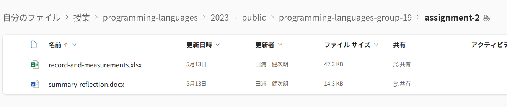

You collaborate with team members. Here are responsibilities of you and your group.
Each member submits your notebook through Jupyter by pressing the "Submit" button of
pl05_calculatorpl06_memory_management . The notebook does not contain any coding problem, so it is mainly for the formality.
Other materials should be submitted by editing collaborative documents (Microsoft Excel/Word) I give to each group. A folder named programming-languages-group-NN should appear in your OneDrive page's "Shared" folder on the left pane, where NN is your group number. The folder contains a child directory
assignment-1assignment-2, which contains two filesrecord.xlsxrecord-and-measurements.xlsx and summary-reflection.docx
To see these files, you have to sign in Microsoft 365 with UTokyo Account (see this page if you don't know how).
To indicate you are able to access these files, please write your name and student id in work log sheet in
record.xlsxrecord-and-measurements.xlsx immediately.
-
A group has to compile records of when each member worked, both individually or with other members into work log sheet in
record.xlsxrecord-and-measurements.xlsx.A group has to gather and have meetings a few times. They can/should also include meetings in classes (if and only if the group indeed met during a class).
-
A group has to execute all problems (Problems 1-3) and fill corresponding sheet in the Excel file with experimental results.
-
(The main part) In the meeting(s), discuss questions asked in each problem and put them in the summary-reflection.docx.
(added Jun 5th) In addition, discuss and explain when/how a node of the tree is collected (or becomes collectable, in garbage-collected languages) during the execution of a program.
- for garbage-collected languages (Go, Julia, OCaml), when does a node of the tree become unreachable from the root (therefore become collectable)?
- for Rust, when does a node lose its owner pointer (therefore is collected)? also confirm that there is indeed only a single owner pointer to each (live) node

-
After you have done, each member should send a brief notice to the assignment 2 in ITC-LMS saying something like "we have done all the work specified" and optionally some nice greetings or remarks.